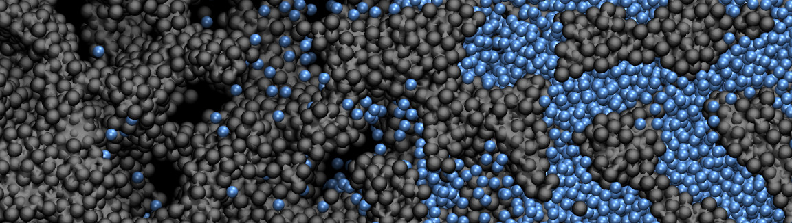
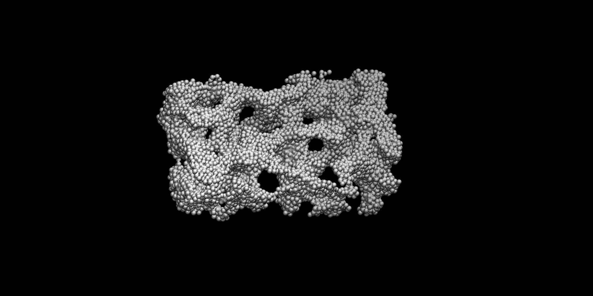
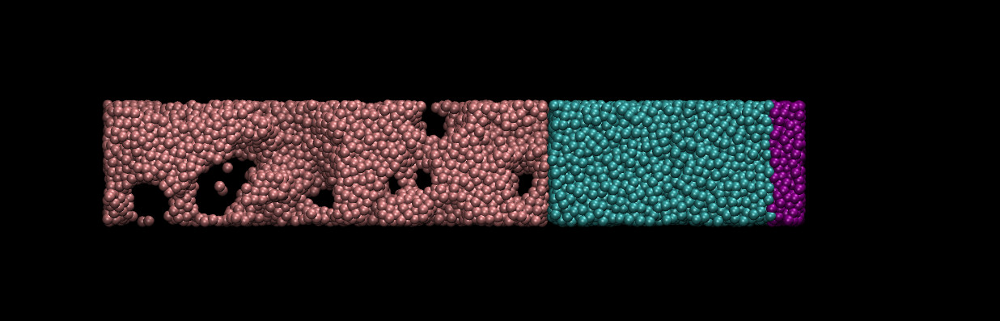

Capillary filling in a disordered porous medium

Warning: This tutorial may be obsolete.
In this tutorial, we are going to simulate the capillary filling of a LJ fluid in a disordered porous medium. If you are not already familiar with LAMMPS and molecular dynamics, I suggest you to follow tutorial 1 first.
If you already have a good grasp on LAMMPS, you can download directly the input scripts that will be written following this tutorial on Github.
Step 1 -- Equilibrated fluid
We are going to create the fluid and the solid separately. Let us first create a block of LJ fluid at equilibrium pressure and temperature. In a folder, create a new input script called input.fluid.lammps, and copy the following lines in it:
# Initialisation
units lj
pair_style lj/cut 2.5
atom_style atomic
boundary p p p
# System definition
region mybox block -17 17 -8 8 -8 8
create_box 3 mybox
create_atoms 2 random 6500 341341 mybox
# Simulation settings
mass * 1
pair_coeff * * 1.0 1.0
neigh_modify every 1 delay 4 check yes
dump mydmp all atom 1000 dump.fluid.lammpstrj
# Run
thermo 100
minimize 1.0e-4 1.0e-6 1000 10000
reset_timestep 0
thermo 1000
velocity all create 1.0 4928459 mom yes rot yes dist gaussian
fix mynpt all npt temp 1.0 1.0 0.1 x 1.0 1.0 1.0
run 10000
write_data data.fluid.lammps
If you followed tutorials 1, you may notice 3 novelties here. First, the absence of the command 'dimension 2' in the 'Initialisation' section. Implicitly, we are using 'dimension 3' but we don't have to specify it because it is the default value. Another novelty is that we use the '*' in the mass and pair_coeff command, therefore the commands apply to all three atom types of the simulation. Finally we are using the npt command. This command replaces the 'nve' and 'langevin' previously used. This command performs a time integration that is consistent with the isothermal-isobaric ensemble, and updates the position and velocity for atoms each timestep. Here, the npt command is used to impose a temperature of 1 (unitless) to all of the atom (there are only atoms of type 2 in the present simulation) as well as a pressure of 1 (unitless). In order to impose the pressure, only the 'x' dimension of the box is adjusted until the desired pressure is reached. This way the dimensions of the box along y and z remain unchanged, which will be practical later. You can run this script using LAMMPS. You should see the following in the terminal:
Step Temp E_pair E_mol TotEng Press Volume
0 1 -6.4715435 0 -4.9716935 -0.51399353 13600
1000 1.0025491 -4.8593782 0 -3.355705 0.93808457 13292.385
2000 0.99512986 -4.8340084 0 -3.3414629 1.044646 13300.877
3000 1.0088986 -4.8128487 0 -3.2996522 1.02219 13348.089
4000 0.97984829 -4.8186744 0 -3.3490489 1.0048355 13352.191
5000 0.98472311 -4.8288724 0 -3.3519354 1.0501592 13277.938
6000 0.99288505 -4.8539184 0 -3.3647398 1.0186574 13245.773
7000 1.0014122 -4.8317086 0 -3.3297405 0.94891429 13346.852
8000 1.0162722 -4.8468695 0 -3.3226136 0.9611104 13312.45
9000 1.0035962 -4.8534009 0 -3.3481571 0.97707932 13278.277
10000 1.013074 -4.8239762 0 -3.3045172 1.0228241 13328.918
Due to the use of the npt command, the volume of the box is adjusting, and both pressure and temperature oscillate near 1. The final configuration of the simulation has been saved in 'data.fluid.lammps' and will be usefull later.
Step 2 -- Equilibrated porous medium
Let us create a porous medium. Do to so, we are going to first create a fluid with a density slightly lower than the density of a liquid. We are going to let the atoms reorganise slightly (they are going to form some cluster). Then we are going to freeze them (by reducing the temperature). By doing so, the following structure will be generated, and this structure will then be used as a porous medium:

Create a new input file, name it input.porous.lammps, and copy the following lines:
# Initialization
units lj
pair_style lj/cut 2.5
atom_style atomic
boundary p p p
# System definition
region mybox block -30 30 -8 8 -8 8
create_box 3 mybox
region myblk1 block -30 30 -8 8 -8 8
create_atoms 1 random 6500 151522 myblk1
# Simulation settings
mass * 1
pair_coeff * * 1.0 1.0
neigh_modify every 1 delay 4 check yes
dump mydmp all atom 1000 dump.porous.lammpstrj
# Run
thermo 100
minimize 1.0e-4 1.0e-6 1000 10000
reset_timestep 0
thermo 100
velocity all create 1.0 4928459 mom yes rot yes dist gaussian
fix mynve all nve
fix mylgv all langevin 1.0 0.0 0.1 1530917 zero yes
run 10000
change_box all x final -65 65
write_data data.porous.lammps
At this point you should be familiar with all the commands in this script. There is one subtility however, in the Langevin command, the initial temperature (=1) is different from the final temperature (0), therefore the imposed temperature will gradually decrease from 1 to 0 during the 10000 steps. In addition, just before writing the data in data.porous.lammps, the dimensions of the box are changed along the x direction. This way, the box will be large enough for the liquid to be added in the next step. The command 'change_box' does not affect the present calculation, because it appears after our last 'run' command. Run LAMMPS with the input.porous.lammps script to generate the data.porous.lammps.
Step 3 -- Capillary filling simulation
We now want to perform the simulation of capillary filling. Do to so, we need to put into contact our previously generated fluid with our previously generated porous medium. In addition, we want the pressure in the LJ liquid to be maintained at 1 (unitless), for which we are going to use a piston to press on it. If we don't, the pressure in the fluid will decrease to 0, and it will ressemble a gas and not a liquid. You can observe this phenomena by running the input.fluid.lammps script with a pressure of 0.
Let us proceed step-by-step. Create a new script, call it input.filling.lammps, and copy the following lines:
# Initialization
units lj
pair_style lj/cut 2.5
atom_style atomic
boundary p p p
# System definition
read_data data.porous.lammps
read_data data.fluid.lammps add append
LAMMPS allows you to read multiple data file. Here we start by opening data.porous.lammps, then we open data.fluid.lammps with the additional keywords 'add append' indicating that the ids of the atoms from data.fluid.lammps will be shifted (each atom has a number that must be unique, you must avoid overlap) . If you run this script you will see:
Reading data file ...
orthogonal box = (-65 -10 -10) to (65 10 10)
1 by 1 by 1 MPI processor grid
reading atoms ...
7000 atoms
reading velocities ...
7000 velocities
read_data CPU = 0.0152357 secs
Reading data file ...
orthogonal box = (-65 -10 -10) to (65 10 10)
1 by 1 by 1 MPI processor grid
reading atoms ...
10000 atoms
reading velocities ...
10000 velocities
read_data CPU = 0.0173977 secs
Total wall time: 0:00:00
LAMMPS reads the two data files, and uses the box dimension of data.porous.lammps, and not the one of data.fluid.lammps, as anticipated. We still need to shift the positions of the atoms (the positions of the fluid and solid atoms are currently overlapping).
# Simulation settings
group sol type 1
group liqinit type 2
mass * 1
pair_coeff * * 1.0 1.0
# move solid
variable solhi equal -1*(bound(sol,xmax)+0.5)
displace_atoms sol move ${solhi} 0 0
# move liquid
variable liqlo equal -1*(bound(liqinit,xmin)-0.5)
displace_atoms liqinit move ${liqlo} 0 0
# define piston
variable pstlo equal bound(liqinit,xmax)-4
region myblock block ${pstlo} INF INF INF INF INF
group pst region myblock
set group pst type 3
group liq type 2
neigh_modify every 1 delay 5 check yes
neigh_modify exclude group sol sol
neigh_modify exclude group pst pst
In the 'move solid' subsection, the location of the solid atoms with the maximum coordinate along x is detected, and used to shift the position of the entire solid along x. The solid is now located in x<0.
The same is done for the liquid in the 'move liquid' subsection, so the liquid is located in x>0 with no overlap with the solid.
Then, in the 'define piston' section, a layer of width = 4 (unitless) is identified (corresponding to the atoms that are far from the porous media). The atoms in this layer are labelled as pst for piston, and their type is changed from 2 to 3. Then the atoms that still have the id '2' are put in the group named liq. We have now three groups of atoms: sol, liq, and pst (the group liqinit contains the atoms of groups liq + pst, and will not be used in the following). To give you an idea, the system currently looks like that, with the piston on the right, the solid on the left, and the liquid in between:

We can write the last part of the code. The groups liq and pst will be treated separately, as we want the atoms of the liquid to move freely (except for the constant temperature), and the atoms of the piston to move as a block, and to apply a force on the liquid (the force will be along x and will push from right to left, so that the liquid will be maintained as a constant pressure). During this simulation, the atoms of the solid will be kept immobile, to do so, we simply don't perform a time integration for these atoms (i.e. we do not apply any fix nve of npt to these atoms). Copy the next lines:
# Run
# piston
fix mynve1 pst nve
fix mysfr pst setforce NULL 0 0
variable npst equal count(pst)
variable areaYZ equal ly*lz
variable press equal 1
variable fpa equal ${press}*${areaYZ}/${npst}
fix myafr pst aveforce -${fpa} NULL NULL
velocity pst set 0 0 0
# liquid
velocity liq create 1.0 4928459 mom yes rot yes dist gaussian
fix mynve2 liq nve
compute tliq liq temp
fix mylgv liq langevin 1.0 1.0 0.1 1530917 zero yes
fix_modify mylgv temp tliq
dump mydmp all atom 1000 dump.filling.lammpstrj
thermo 10000
run 1000000
write_data data.equilibrium
For the atoms of the piston to move as a block, we use the fixes 'setforce' and 'aveforce'. First, the fix setforce ensures that all the forces along y and z applied on the atoms of the group pst are cancelled during the simulation (no force -> no change in velocity -> no change in position). The fix aveforce averages all the forces along x applied on the atoms of group pst, therefore all the atoms of the group always feel the same force. As a consequence, they move as a block along x. In addition, the fix aveforce also adds a force equal to -fpa to the atoms of the group, where fpa as been calculated to correspond to a pressure of 1 (unitless).
It is very important to cancel the initial velocities of the atoms of the piston using 'velocity set', because 'setforce' and 'addforce' only affect the acceleration (if its not clear, you can try to run a simulation without the 'set velocity', the issue should be visible).
The atoms of the liquid are treated as usual (i.e. nve + langevin), except that we have to use a fix_modify to ensure that the fix langevin uses the temperature of the liquid as an input, and not the temperature of the whole system (because the atoms of the solid have a temperature of 0).